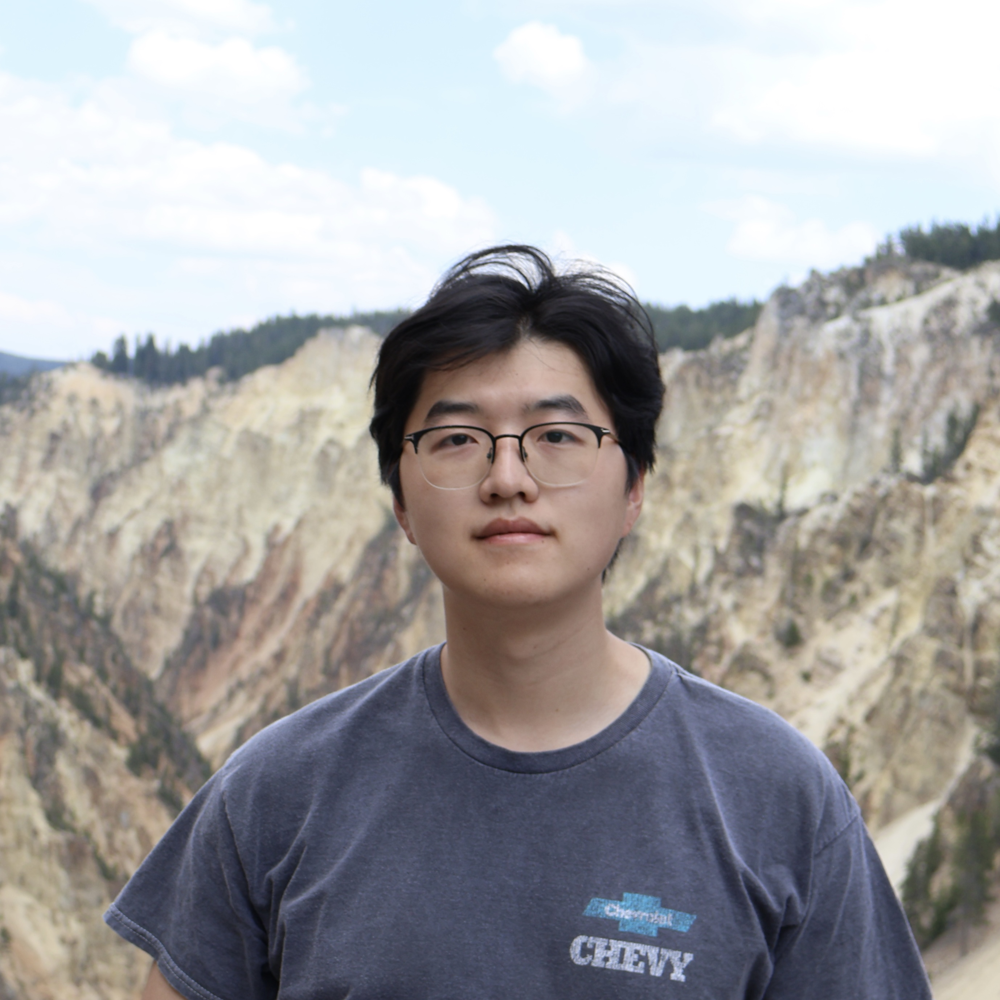

|
Weihang Guo I am a first year Ph.D. student at Rice University advised by Prof. Lydia Kavraki. I am also honored to collaborate with Prof. Zak Kingston and Prof. Kaiyu Hang. My research interests include robot safety, high-performance robotic systems, and multi-robot planning. I am a maintainer of The Open Motion Planning Library (OMPL). |
 |
{kind=link}
Honors and Awards
|

|
Efficient Multi-Robot Motion Planning for Manifold-Constrained Manipulators by Randomized Scheduling and Informed Path Generation
Weihang Guo, Zachary Kingston, Kaiyu Hang, Lydia E. Kavraki IEEE Robotics and Automation Letters (RA-L), 2026 To appear. |

|
Python Bindings for a Large C++ Robotics Library: The Case of OMPL
Weihang Guo, Theodoros Tyrovouzis, Lydia E. Kavraki 2026 IEEE International Conference on Robotics and Automation (ICRA), 2026 To appear. |

|
CaStL: Constraints as Specifications Through LLM Translation for Long-Horizon Task and Motion Planning
Weihang Guo, Zachary Kingston, Lydia E. Kavraki 2025 IEEE International Conference on Robotics and Automation (ICRA), 2025 |
Invited Talks
|
Reviewing
|
|
|